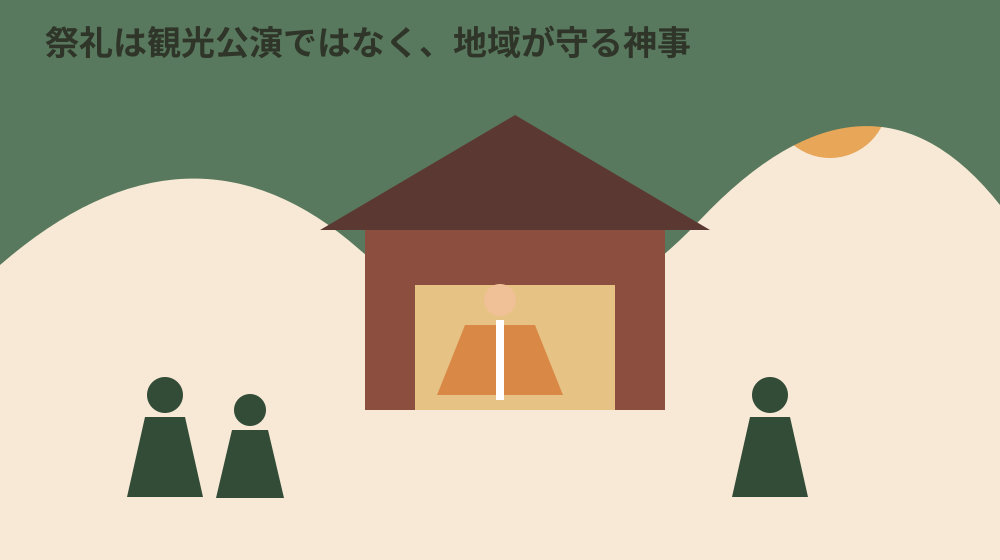
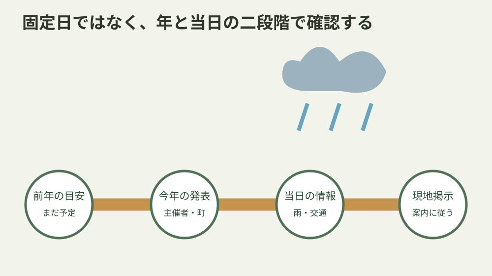
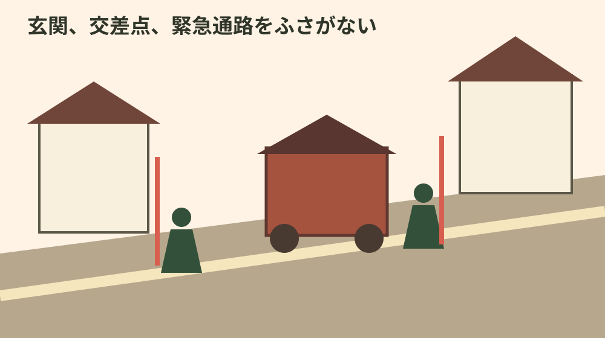

静岡県周智郡森町・祭礼
森町の祭り完全ガイド｜森・飯田・一宮の伝統行事
森町の祭礼は、地域の信仰と暮らしの中で守られる神事です。月だけを見て出かけるのではなく、今年の発表、当日の天候と交通、現地の案内を順に確認します。三社の舞楽、森の祭りなどの違いと、見学する側が守りたい距離を整理します。
結論：前年のカレンダーは目安、今年と当日を二度確認する
祭礼名に「4月」「7月」「11月」といった目安があっても、毎年まったく同じ日、時刻、場所で行われるとは限りません。曜日に合わせる祭礼、固定日を基準に近い週末へ移す奉納、行列経路がある祭りでは、年ごとに案内が変わります。
出発を決めるときは、最初に神社、保存会、森町、観光協会など、その祭礼を案内する当年の公式情報を探します。次に、前日から当日の天候、道路、公共交通を見ます。最後に現地の看板や係員の指示を確認します。古いブログや前年の写真は雰囲気を知る資料であり、当日の運営情報ではありません。
雨天では、神事そのものが行われても、公開範囲、舞台、時刻、屋台の曳き回し、行列、駐車場が変わる可能性があります。「雨天決行」という短い表示があっても、全工程が通常どおりとは限りません。雨が上がった後も、路面、川、斜面、電気設備の安全確認で変更される場合があります。
祭礼は観光客向けの公演だけではありません。氏子、保存会、地域住民、奉仕者が準備し、祈り、継承する場です。来訪者は見やすい場所を先取りするのではなく、神事、担い手、地域の生活を妨げない位置を選びます。

遠江森町の舞楽は三社で一つの指定、内容は同じではない
小國神社、天宮神社、山名神社に伝わる舞は、「遠江森町の舞楽」として1982年1月14日に国の重要無形民俗文化財へ指定されています。三社それぞれが別々に三件指定されているのではなく、三社の舞を合わせた一件の指定です。
一方で、三社の内容は同一ではありません。静岡県の文化財ナビは、小國神社と天宮神社の舞楽を奈良春日神社系の舞楽が地方化したもの、山名神社の舞を舞楽が風流化した典型例と説明しています。共通の指定名だけを見て「十二段舞楽が三社で同じ」と書かないことが重要です。
静岡県は公開時期の目安として、天宮神社を4月第1土曜・日曜、小國神社を4月18日に最も近い土曜・日曜、山名神社を7月15日に近い土曜・日曜と案内しています。しかし、これは将来の全日程を確定する年間予約表ではありません。その年の開始時刻や奉納順は最新案内を優先します。
舞の由来や演目を知りたいときは、町や県、文化庁の文化財資料から始めます。神社や保存会の説明が公開されていれば合わせて読みます。紹介文をそのまま転載せず、指定、公開、場所という事実と、見どころに関する自分の感想を分けます。
観覧では、舞台へ近づくことより全体が見える位置を選びます。奉仕者の動線、楽人の出入り、神職や関係者の席を空けます。稚児など子どもが関わる場面では、顔を近くから撮影し、無断で公開することを避けます。
演目名や順序は、非公式な動画の字幕だけで確定しません。似た装束や動きがあっても、三社で名称、意味、構成が違う場合があります。現地の案内、保存会や文化財資料に説明がなければ、見た印象として記録します。
指定文化財という言葉は、祭礼の全ての催し、建物、道具が個別に国指定という意味ではありません。指定対象と関連行事を混同せず、文化庁や県の掲載単位を確認します。
舞楽の時間が夜に及ぶ場合は、照明があっても足元を確認します。境内の石段、砂利、根、コード、仮設物へ注意し、懐中電灯を舞台へ向けません。防寒と雨具も季節に合わせます。
季節ごとの祭礼を、固定日ではなく確認入口で整理する
年始には、小國神社の田遊祭や節分などが知られています。神社の年間行事は、祭典と一般の参拝、授与、駐車の案内が別に出る場合があります。正月期は通常より交通が混みやすく、祭典の開始時刻だけでなく参拝者向け交通情報を確認します。
春は天宮神社と小國神社の舞楽が大きな入口です。両社は同じ週末とは限らず、会場、時間帯、明るさ、駐車条件も違います。一日で二社を急いで回る計画より、一社の奉納と周辺の交通を落ち着いて確認する方が安全です。
夏は山名神社天王祭舞楽の時期です。暑さ、夕立、雷、夜間の視認性が加わります。飲み物を持ち、体調が悪いときは観覧を切り上げます。雷注意報や強い雨がある場合は、屋外に留まることを前提にしません。
秋には森の祭りが大きな注目を集めます。屋台や神輿が町なかを進む祭りでは、通常の車道や交差点が祭礼空間になります。運行、交通規制、駐車場、公共交通の臨時情報を当年の案内で確認し、生活道路へ無断駐車しません。
収穫に関わる祭典や新嘗祭など、一般に知られる行事名でも、公開範囲や関連催事は神社ごと、年ごとに異なります。品評会、販売、紅葉期の交通などを前年の記録だけで予定へ入れず、今年の開催発表を確認します。
祭礼カレンダーへ「毎年必ず」と書くのは、主催者が固定開催を明示している場合に限ります。週末への調整、地域事情、災害、感染症、担い手、安全上の判断で変更される可能性を残します。
複数の祭礼を一日で回る計画は、道路規制や駐車待ちで崩れやすくなります。祭礼ごとの意味を理解するためにも、一日一つを基本にし、帰宅時間と休憩を確保します。
早朝や夜間の行事は、近隣の静かな時間帯でもあります。車のドア、会話、音楽、ライトを抑え、指定された入口から移動します。住宅街で待機する必要がある場合も、エンジンをかけ続けません。
| 時期の目安 | 主な確認入口 | 当日に変わりやすいこと |
|---|---|---|
| 年始 | 小國神社等の祭典・交通案内 | 混雑、駐車、授与時間 |
| 春 | 天宮・小國の舞楽 | 開始時刻、雨天会場、奉納順 |
| 夏 | 山名神社天王祭舞楽 | 天候、夜間交通、暑さ対応 |
| 秋 | 森の祭り、収穫期の祭典 | 規制、屋台経路、関連催事 |
日程、雨、交通を出発前に確かめる手順
第一段階は、一か月から二週間前です。公式ページや広報で当年の日付と会場を確認します。検索結果の説明文には前年情報が混ざることがあるため、ページ本文の更新日、対象年、主催者名を見ます。
第二段階は、数日前です。天気予報、台風、道路工事、公共交通、駐車場を確認します。雨具を使うなら、傘が後ろの人の視界を遮ることも考え、会場の案内に合う服装を選びます。
第三段階は、当日の出発前です。公式サイトや公式SNS、町の緊急情報に変更が出ていないか確認します。「昨日の時点では開催」だけで出発しません。電話問い合わせが集中する時間帯は、公開情報を先に読みます。
第四段階は現地です。駐車場の入口、通行止め、観覧区域、撮影禁止、列の位置、雨天会場などは現地掲示が最も具体的です。予定していた場所へ入れなくても、柵や係員を越えません。
帰りの時刻も到着前に決めます。夜の祭礼では、最終列車、バス、駐車場閉鎖、歩道の暗さ、子どもの体力を考えます。最後まで見ることより、安全に帰れる余裕を残します。
電話で確認するときは、「今年の日付」「見たい奉納」「雨天時」「交通」の四点を短く尋ねます。由緒や演目の説明と、当日の運営窓口が同じとは限らないので、案内された担当を尊重します。
自動車では、ナビが最短として示す細い生活道路へ入らないよう、公式の進入路を確認します。満車なら路肩へ置かず、案内された代替駐車や公共交通へ切り替えます。
鉄道やバスを使う場合、往路だけでなく復路の乗り場と最終時刻を保存します。交通規制で停留所が移る場合があるため、当日の事業者案内も見ます。

撮影、立入り、駐車、子ども連れの観覧マナー
撮影は、カメラを向ける前に許可と案内を確認します。神事の一部、舞台裏、装束の準備、社殿内は撮影できない場合があります。撮影できる場所でも、フラッシュ、三脚、長いレンズで通路を占有しません。
ドローンは落下、騒音、プライバシー、航空法、文化財や神社の管理に関わります。空いて見えるから飛ばすのではなく、管理者の許可と法令上の条件が確認できない限り使用しません。
屋台や神輿の前後には、曳き手、警備、方向転換のための空間が必要です。近い映像を撮るために進路へ出ず、係員が空けるよう求めた場所からすぐ移動します。綱、車輪、電線、段差へ近づかないよう、子どもとは手をつなぎます。
住宅の玄関、車庫、店の入口、交差点、橋、消火栓付近を観覧場所にしません。空いた場所に見えても、住民や緊急車両が使います。私有地の駐車場を、短時間だからと無断で使わないでください。
飲食は指定された場所で行い、ごみを持ち帰るか案内された回収へ出します。アルコールを飲む人は運転しません。地域の祭礼であることを理由に、路上飲酒や大声がどこでも認められるわけではありません。
子ども連れでは、迷子になったときの集合場所、保護者の電話番号、耳を守る方法、トイレ、休憩を決めます。太鼓や人混みが苦手なら、中心から離れた場所で短時間見る選択があります。
高齢者や車いす利用者と出かける場合は、段差、砂利、仮設通路、トイレ、駐車から観覧場所までを主催者へ確認します。介助者だけで無理に進まず、混雑前に帰る計画も用意します。
聴覚や視覚に配慮が必要な人と訪れる場合は、放送だけに頼らず、同行者と集合場所を決めます。大きな音や暗い会場が負担になる人は、事前に動画や会場図を確認し、短時間の観覧を選びます。
体調不良、転倒、迷子を見かけたときは、自分だけで対応を抱えず係員へ伝えます。緊急時は119や110を使い、救護や緊急車両の動線を空けます。撮影を続けることはしません。
ペット同伴は、神社、混雑、音、他の参拝者への影響を考えます。同伴可否を確認できない場合は連れて行かず、暑い車内へ残すこともしません。補助犬への理解と必要な動線を妨げないようにします。

舞台の外側にある継承と地域の負担を見る
祭礼は当日の数時間だけで成り立ちません。保存会の練習、装束や道具の手入れ、会場設営、清掃、警備、連絡、若い担い手への伝承があります。観覧者は完成した場面を見ていますが、その前後の時間を想像することが敬意につながります。
文化財指定は、行事を変化させず展示することと同義ではありません。地域の人が担い、伝える民俗文化は、暮らしの変化、人手、費用、安全と向き合いながら続きます。外から「昔どおりにすべき」と簡単に要求しません。
写真や動画を公開するときは、祭礼名、撮影年、場所、変更の可能性を添えます。過去映像へ「今年もこの時間」と書くと誤案内になります。子どもや個人が大きく写る素材は、許可なく宣伝や商用に使いません。
地域で家や土地を持つ人にとって、祭礼は道路利用、駐車、屋台蔵、準備場所など不動産とも関係します。しかし祭礼があることだけで物件の価値や負担を一律に決めることはできません。購入や移住前には、平日と祭礼日の両方の交通、自治会、地域の役割を確認します。
私は小さな不動産業者として、祭りを魅力だけ、負担だけのどちらかへ寄せずに伝えたいと考えます。地域文化を大切にしつつ、参加の範囲、家族の事情、道路、駐車、音、時間を具体的に確認できれば、住む人と訪れる人の行き違いを減らせます。
祭礼をきっかけに移住や家探しへ関心を持った人は、開催日の高揚感だけで住まいを決めません。平日の交通、買い物、通院、災害リスク、地域の役割を別の日に確認します。
地域側も来訪者側も、分からないことを推測で埋めない姿勢が大切です。日程を確認した日、情報源、変更点を記録すれば、翌年に古い情報を拡散する危険を減らせます。
祭礼後の清掃や片付けも継承の一部です。観覧者が自分のごみを残さないことはもちろん、撤収作業中の道路や境内へ再び入って撮影しません。終了の案内があれば速やかに移動します。
宿泊や飲食を組み合わせる場合は、店や宿へ祭礼日の交通を確認します。通常のチェックイン時刻でも規制で到着しにくい場合があり、予約先の入口や駐車が変わることがあります。
近隣住民から注意を受けたときは、祭礼を見に来た権利を主張せず、その場から移動します。公道に見える場所でも、玄関や仕事の出入りを妨げている可能性があります。
文化を学ぶ目的なら、祭礼当日だけでなく歴史資料、文化財ページ、神社の通常参拝を分けて訪れます。混雑の中で長い質問をせず、資料で確認できることは事前に読みます。
翌年へ情報を引き継ぐときは、日付の前に年を明記します。「4月第1週」とだけ残すと、後から何年の記録か分かりません。撮影日、発表元、雨天変更、実際の開始を一組で保存します。
森町の祭礼を初めて見る人に伝えたいのは、全てを見ることより、地域が守る場へ静かに参加することです。一つの舞、一台の屋台を丁寧に見て、安全に帰る計画が、次の年も迎えてもらえる観覧につながります。
情報を家族や友人へ送るときは、ページの公開年と確認日も一緒に伝えます。集合時刻だけを転送すると、後で変更理由が分からなくなります。公式発表のリンク、祭礼名、対象年、当日確認の必要を一つのメッセージにまとめてください。
よくある質問
来年の祭礼も同じ日ですか
同じとは限りません。固定日に見える祭礼でも曜日に合わせる場合があり、時刻や行列経路も変わります。その年の神社、保存会、森町、観光協会等の発表を確認してください。
雨でも舞楽や屋台は行われますか
雨天時は会場、時刻、経路、奉納内容が変更または中止になる可能性があります。前日の予定だけで判断せず、当日の公式発表と現地掲示に従ってください。
舞楽は三社とも同じ内容ですか
同じではありません。静岡県は、小國神社と天宮神社の舞楽は奈良春日神社系の舞楽が地方化したもの、山名神社は舞楽が風流化した典型例と説明しています。
祭りの写真や動画は自由に撮れますか
撮影できる範囲は祭礼と場所で異なります。神事、舞台、子どもの奉仕者、私有地では現地の案内を確認し、フラッシュ、三脚、ドローン、通路占有を避けてください。
公式情報源と関連ページ
文化財指定と公開時期の目安は2026年8月9日に確認しました。実施日、開始時刻、雨天変更、交通は当年と当日の発表を優先してください。